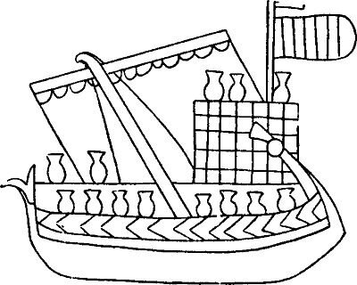

Еще одно скучное, но необходимое терминологическе отступление 
Когда в прошлый раз было сказано, что между концом VI и концом IX вв. никакой информации о дромонах практически не появлялось, не имелось в виду ввести читателя этих строк в заблуждение. Для определенности и точности следовало бы сказать, что за этот период не появилось информации, проливающей свет на конструкцию дромона, систему гребли, комплектование экипажа и тому подобные конкретные вопросы. Вообще же дромон не исчезал в эти годы из переписки, хроник, житий святых, астрологических сочинений и других материалов, которые для нас сейчас являются источниками. Более того, этот период пришелся на самое острое противостояние арабов и византийцев на Средиземном море. И пропустить его мы не имеем права. Тем более, что раньше был обещано глубже разобраться в арабском влиянии на галеростроение в западноевропейских странах в последующие века. Попытаемся выполнить данное обещание, хотя бы в предварительном порядке.
В качестве источников по этой теме можно рекомендовать фундаментальную книгу H. Ahrweiler «Византия и море», монографию John H. Pryor and Elizabeth M. Jeffreys «Век дромона» и ряд других, которые уже неоднократно упоминались в этих записках. Изложим сначала тему применительно к византийскому флоту. Термины буду приводить в латинской транслитерации, лишь в отдельных случаях прибегая для ясности к их написанию, используемому в первоисточниках.
Военный флот в целом, как византийский, так и морских соперников Византии, в источниках рассматриваемого нами периода (особенно в литературных текстах), как правило, обозначался термином stolos; если же имелся в виду только византийский флот, то использовали преимущественно термины ploїmon, ploїma, dromōnion, chelandion (для соединения, эквивалентного эскадре в последующие периоды); изредка употреблялись nautostolēma и nautostolia. Авторы, стремящиеся показать свою эрудицию, использовали архаичный термин plous. Термин karaboploїa для обозначения объединений военных кораблей крайне редок, он, наряду с pragmateutika или emporeutika, skafē, ploїa, karabia, очевидно, зарезервирован за купеческим флотом. Наконец, транспортный флот назывался fortēga, fortagōga или более часто kamatēra и skeuophora (karabia, ploia, skafē и т.д.); определительное слово, относящееся к названиям, обозначало природу груза, например, наиболее часто упротреблялись hippagōga, sitagōga и еще более часто sitophora; термин pyrsophoros stolos обозначал только византийский императорский флот, хотя он не относился к объединениям кораблей, на вооружении которых находился греческий огонь: большие флотские объединения, обладающие греческим огнем, обозначались siphonophoroi, или kakkabopyrphoroi, причем последний термин по использованию и происхождению народный, засвидетельствованный только у Феофана (κακκάβα –чан, котелок, и – расширительно – сифон для греческого огня; см. рисунок вверху).
Родовые термины для обозначения корабля в общем, без уточнения его предназначения, суть naus, ploїon, skafos, holkas; литературными и архаизмами являются: karabos (-ion), ploїmon, katergon, xylon; термины agrarion, sandalion, arklion обозначали обычно малые суда различных типов и часто использовались для обозначения рыболовных флотилий (agrarion от слова agra - рыбная ловля), но также употреблялись и по отношению к кораблям военно-морского флота, упомянем хотя бы basilika и augoustika (= императицына) agraria; заметим, что arklai относится к речным гребным судам, тогда как agraria, sandalia или akreisandalia являются парусными судами.
Среди различных терминов, предназначенных для кораблей и различных категорий византийских судов, только термины dromon и chélandion, оба византийские, предназначались для обозначения единиц военного флота; они заменили в средневековых текстах термины классического языка stratiōtis naus и triērēs, которые однако продолжали широко использоваться наряду с другими терминами, также заимствованными в морской словарь из античного греческого. Писатели-пуристы охотно использовали термины triērēs, diērēs, monērēs, kelēs, epaktokelēs, pentēkontoros, myoparōn и т.д. Термины византийского происхождения, на которых мы уже неоднократно останавливались – dromon и chélandion, а также термин, который лежит в основании всех наших рассуждений – galea – мы здесь рассмотрим лишь в общем контексте.
Термин dromon означает корабль, по преимуществу византийский, часто употребляется начиная с VI века (см. ); такой же термин dromonarioi обозначал экипажи (гребцов) дромонов, которые упоминались в папирусах и других источниках той эпохи, но который, в отличие от дромона, в последующем исчез: он был заменен византийскими терминами (élatai, érétai, и т.д.), означающими матросов и гребцов.
Феофилакт Симокатта использует выражение tachynautousai holkades, уточняя, что эти корабли назывались народом (plēthos) дромонами [«Приск выстроил быстроходные суда (tachynautousai holkades), которые в народе обычно называются дромонами, и на них двинулся к Константиоле»]. Эти подробности показывают нам народное происхождение термина дромон, который указывает быстроту (tachynautousai) корабля, к которому он относится. Во всяком случае этот термин используется без других уточнений, что указывает, что его смысл был вполне ясен в VI в.
Иногда считают, что dromōn и chelandion это два совершенно различных корабля, полагая, что дромон это судно более важное, чем хеландион, хотя того же типа, что и он. Мы уже вкратце обсуждали этот вопрос в разделе «Галера в итало-норманских хрониках». Подробнее остановимся на этом в следующий раз.